🐎 1. Povos Nômades e Primeiros Impérios
A Mongólia sempre foi marcada pela vida nômade. Seus habitantes viviam em tendas chamadas gers e dependiam da criação de cavalos, ovelhas e camelos para sobreviver nas vastas estepes. Antes de se unirem, os diferentes clãs muitas vezes entravam em conflitos entre si. Muito antes do nascimento de Cristo, já existiam grandes impérios na região, como o dos Xiongnu, que alguns estudiosos acreditam estar ligados aos hunos.
 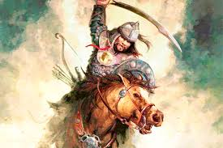
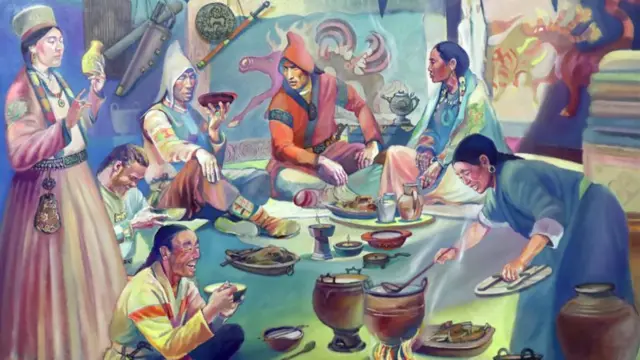
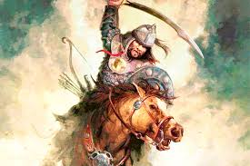
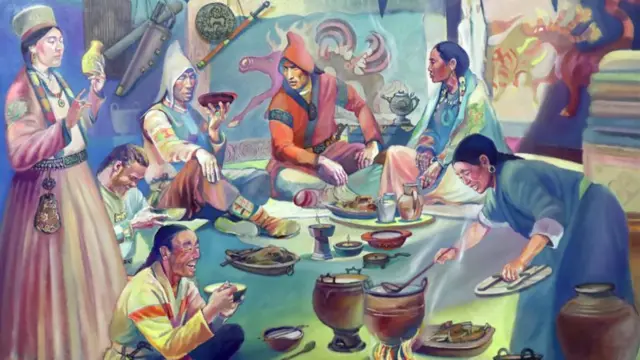
⚔️ 2. Gêngis Khan e o Império Mongol
No início do século XIII, um líder chamado Temujin conseguiu unir as tribos dispersas. Recebeu o título de Gêngis Khan e deu início à construção do maior império continental da história. Sob seu comando, os mongóis conquistaram partes da China, da Rússia, do Oriente Médio e chegaram até a Europa Oriental. Após sua morte, seus descendentes deram continuidade às conquistas, e Kublai Khan chegou a fundar a Dinastia Yuan, que governou a China.
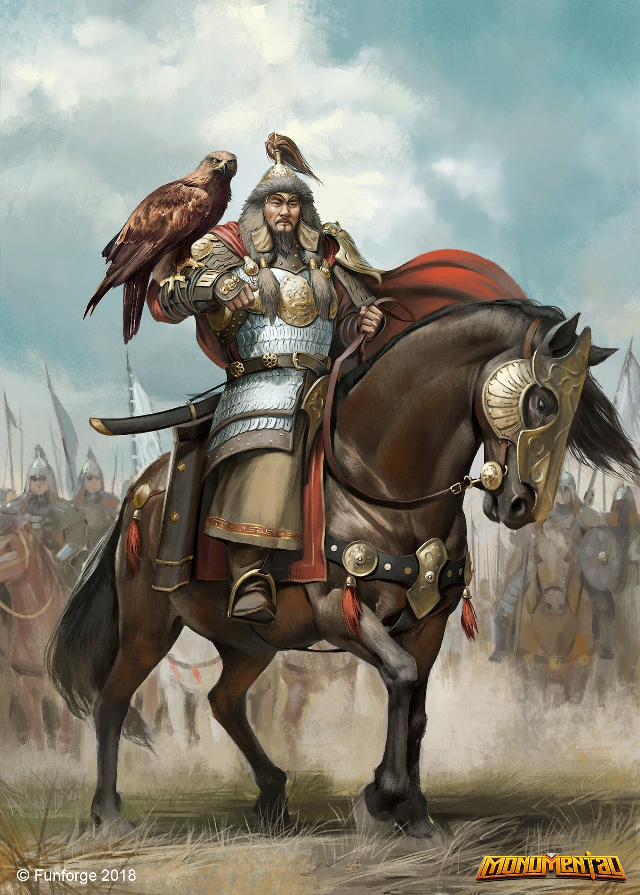 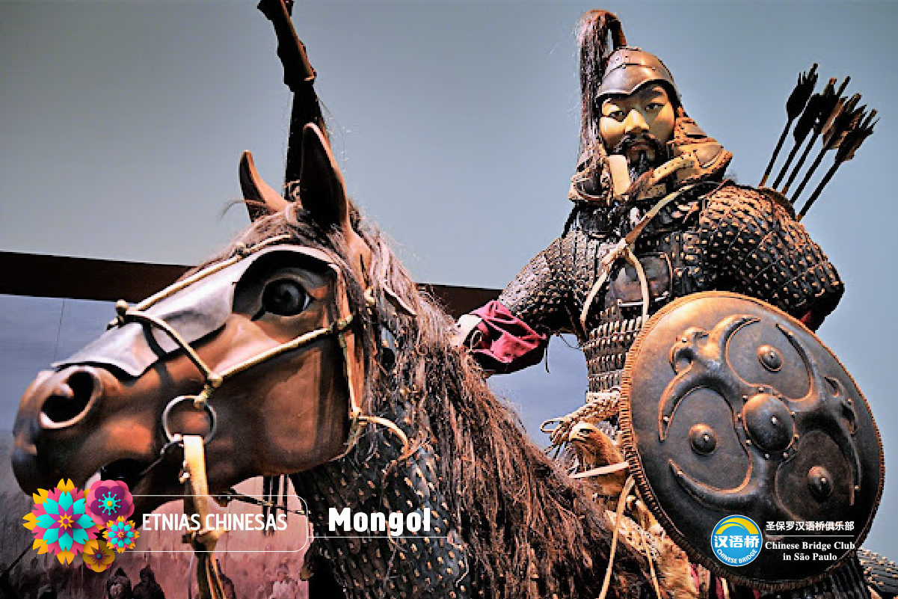 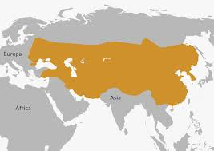📉 3. Declínio e Domínio Chinês
Com o passar do tempo, o imenso império começou a se fragmentar em diferentes reinos, perdendo força e unidade. A Mongólia acabou sendo dominada por outros povos e, durante séculos, esteve sob o controle direto da China, especialmente durante a Dinastia Qing. Essa influência externa marcou profundamente a política e a cultura mongol.
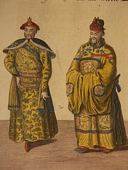 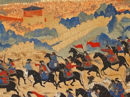 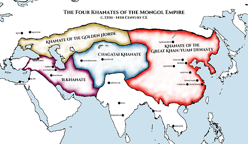🛡️ 4. Independência e Influência Soviética
A queda da dinastia Qing, em 1911, abriu espaço para que a Mongólia proclamasse sua independência. Poucos anos depois, em 1924, foi fundada a República Popular da Mongólia, que seguiu de perto o modelo da União Soviética. Durante décadas, o país viveu sob um regime comunista, com forte presença da ideologia e da influência política vindas de Moscou.
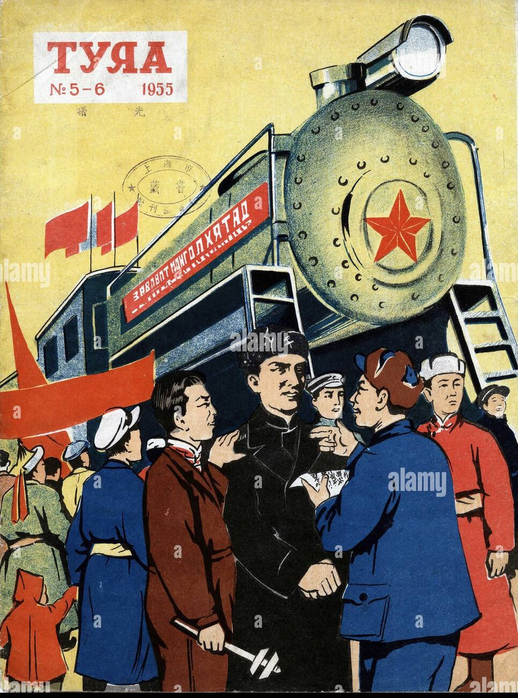 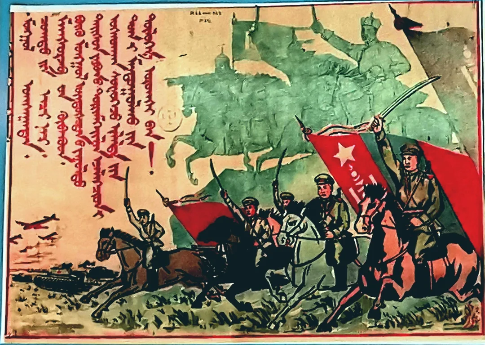 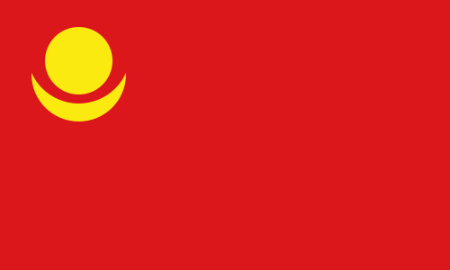🗳️ 5. Transição para Democracia
Com o fim da União Soviética, no início da década de 1990, a Mongólia passou por uma transformação profunda. O povo realizou uma revolução pacífica e deu início a um sistema democrático, com eleições livres e abertura para a economia de mercado. Foi um marco importante na sua história recente.
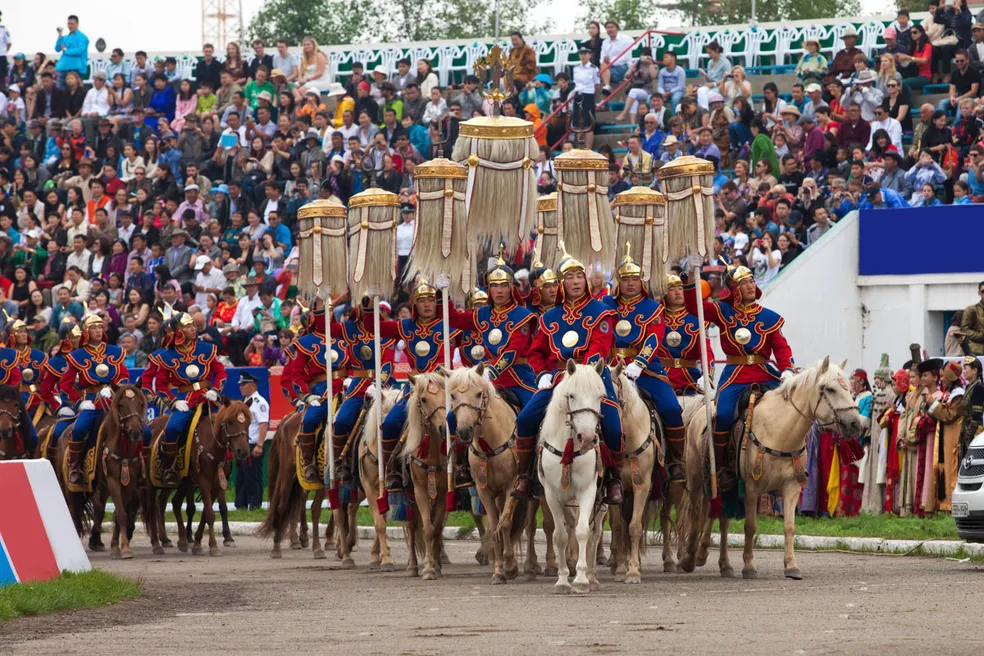 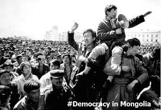 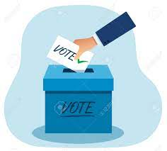🌍 6. Mongólia Hoje
Atualmente, a Mongólia é um país democrático com cerca de três milhões de habitantes. Apesar de modernizar suas cidades e instituições, o povo mongol ainda preserva tradições antigas e uma forte ligação com o modo de vida nômade. Localizada entre duas potências — China e Rússia —, a Mongólia mantém relações diplomáticas com ambas, buscando equilíbrio político e econômico enquanto valoriza sua própria identidade cultural.
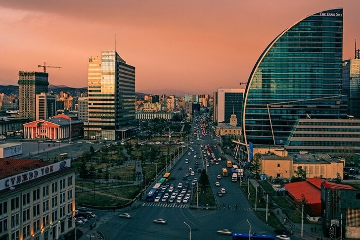 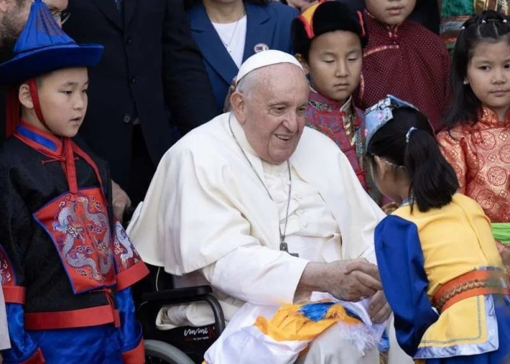 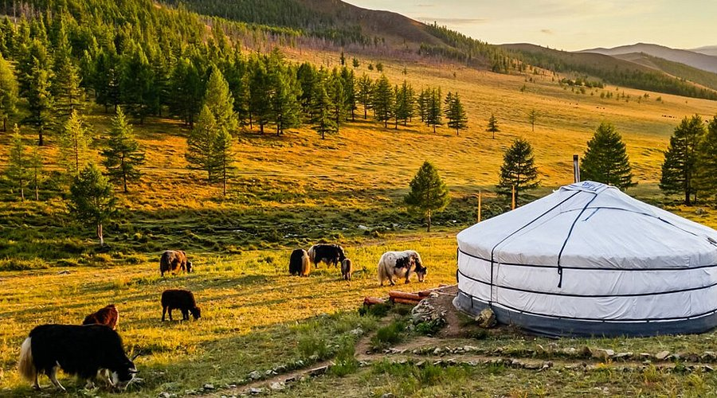